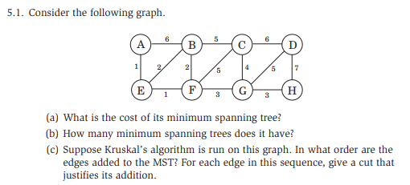

Week 5 — Minimum Spanning Tree
2026-06-15 → 06-21 · Module GR3 (MST: Kruskal's & Prim's)
Due this week
| Item | Type | Note |
|---|---|---|
| HW5 | written | MST problems |
| Quiz 4 | format | graph-theory answer format |
Watch the lecture (MST)
Learning objectives
- State and prove the Cut Property (exchange argument).
- Trace Kruskal's (sort + Union-Find) and Prim's (grow + min-heap).
- Explain why both algorithms are special cases of the Cut Property.
- Quote the O(Elog V) runtime and where the log comes from.
Core concepts
Spanning tree & MST
Definition. A spanning tree of a connected undirected graph G = (V, E) is a subset of edges that is connected and acyclic and touches every vertex. A minimum spanning tree (MST) is a spanning tree of minimum total edge weight.
Intuition: the cheapest way to wire all vertices together with no redundant loops.
Key facts:
- A tree on n vertices has exactly n − 1 edges.
- Any two of {connected, acyclic, n − 1 edges} imply the third.
- Adding one edge to a tree creates exactly one cycle; removing one edge from a tree disconnects it into exactly two components.
- MST need not be unique — but if all edge weights are distinct, the MST is unique.
Cuts
Definition. A cut (S, V \ S) is any partition of the vertices into two non-empty sets. An edge crosses the cut if its endpoints are on opposite sides.
This is the object the Cut Property reasons about — every greedy MST step is secretly "pick the lightest edge across some cut."
The greedy / exchange idea
Both MST algorithms are greedy: repeatedly commit to the locally-cheapest safe edge and never backtrack. Correctness comes from the Cut Property, proved by an exchange argument (swap a heavier edge out for the greedy edge without increasing total weight).
Union-Find (disjoint sets)
Purpose. Kruskal needs to test "do these two
endpoints already sit in the same tree component?" fast. Union-Find
supports find(x) (which component) and
union(x,y) (merge) in near-constant amortized time with
path compression + union by rank (O(α(n)),
effectively O(1)).
Algorithms
Kruskal's — O(Elog V)
- Sort all edges by weight ascending. (this sort dominates: O(Elog E) = O(Elog V))
- Initialize Union-Find with each vertex in its own set; start with an empty MST.
- Scan edges cheapest-first. For edge (u, v): if
find(u) ≠ find(v), add it to the MST andunion(u,v); otherwise skip (it would create a cycle). - Stop once the MST has n − 1 edges.
Use when: the graph is given as an edge list / is sparse; easy to reason about.
Prim's — O(Elog V)
- Pick any start vertex; put it in the tree set T.
- Maintain a min-heap of edges crossing from T to the rest (or of vertex keys = the lightest edge connecting each outside vertex to T).
- Repeatedly extract the lightest crossing edge whose far endpoint is outside T; add that edge and vertex to T; update keys of its neighbours.
- Stop when T = V.
Use when: the graph is given as an adjacency list / you want to grow one connected tree.
| Algorithm | Strategy | Data structure | Runtime |
|---|---|---|---|
| Kruskal's | add globally-lightest edge that doesn't form a cycle | Union-Find | O(Elog V) |
| Prim's | grow one tree, add lightest edge leaving it | min-heap | O(Elog V) |
Both reach O(Elog V); the log V is the sort (Kruskal) or the heap operations (Prim).
Key theorems & results
Cut Property
For any cut (S, V \ S), if e is a strictly lightest edge crossing the cut, then e belongs to every MST. (For ties: e belongs to some MST.)
Proof (exchange argument). Suppose an MST T does not contain the lightest crossing edge e = (u, v). Adding e to T creates a cycle; since u ∈ S and v ∈ V \ S, that cycle must cross the cut a second time on some edge e′. By choice of e, w(e) ≤ w(e′). Form T′ = T − e′ + e: still spanning and acyclic, with w(T′) = w(T) − w(e′) + w(e) ≤ w(T). So T′ is also an MST and it contains e. ◼
Consequences. Kruskal applies the Cut Property to the cut separating the two components its candidate edge would join; Prim applies it to the cut (T, V \ T). Both only ever add lightest-across-a-cut edges, so they only add MST edges.
Worked example (Kruskal trace)
Vertices A, B, C, D, E; edges (weight): AB(1), BC(2), BD(3), AC(4), CD(5), DE(6).
| Step | Edge | Weight | Action |
|---|---|---|---|
| 1 | AB | 1 | add — different sets |
| 2 | BC | 2 | add — different sets |
| 3 | BD | 3 | add — different sets |
| 4 | AC | 4 | skip — A, C already connected (cycle) |
| 5 | CD | 5 | skip — C, D already connected |
| 6 | DE | 6 | add — connects E; now n − 1 = 4 edges, done |
MST = {AB, BC, BD, DE}, total weight 1 + 2 + 3 + 6 = 12.
Common pitfalls / exam traps
- Forgetting MST is for undirected graphs; "MST of a directed graph" is a different (arborescence) problem, out of scope.
- Claiming uniqueness without the distinct-weights hypothesis.
- In Kruskal, skipping the cycle check — adding an edge inside a component breaks the tree.
- Quoting O(E) for the algorithms — the sort / heap makes it O(Elog V).
How to answer (HW / exam)
MST is a black box: cite Kruskal/Prim and their O(Elog V) runtimes; invoke the Cut Property for correctness rather than re-deriving from scratch. See graph guidance.
Go deeper — readings · guidance · deep notes
- DPV §5.1 (greedy / MST)
- Graph guidance · Black boxes · Common runtimes
- Deep notes: GR3 MST · cheat sheet
- lectures/ · transcripts/ · readings/ · guidance/ · notes/
Comprehensive Notes
Full lecture notes for GR3, with figures and diagrams inline. MST is our first greedy algorithm that provably works; the key is the Cut Property.
GR3 — Minimum Spanning Tree

1. Problem definition
- Given: an undirected, connected graph G = (V, E) with edge weights w(e).
- Find: a spanning tree T ⊆ E of minimum total weight min ∑e ∈ Tw(e).
A spanning tree of G is a subset of edges that connects all vertices (spans the graph), has no cycles (is a tree), and has exactly |V|−1 edges.
2. Tree properties
These three properties are equivalent for a subgraph with n vertices:
| Property | Implies |
|---|---|
| Connected + n − 1 edges | must be a tree |
| Connected + acyclic | must have n − 1 edges |
| n − 1 edges + acyclic | must be connected |
Also: a tree has exactly one path between any pair of vertices; removing any edge disconnects it; adding any edge creates exactly one cycle. Intuition: a tree is the most economical way to keep a graph connected (n − 1 edges); an MST does so with minimum weight.
3. Kruskal's algorithm
Repeatedly add the lightest edge that doesn't create a cycle.
Kruskal(G, w): // with Union-Find
1. Sort E by increasing weight
2. X = ∅
3. Initialize Union-Find with each vertex in its own set
4. For each edge e = (v, w) in sorted order:
if Find(v) ≠ Find(w):
X = X ∪ {e}
Union(v, w)
5. Return XCycle detection with Union-Find. A disjoint-set
structure supports Find(v) (component of v) and Union(v,w)
(merge components). Adding edge (v, w) creates a cycle
⇔ Find(v) = Find(w).
Runtime: O(|E|log |V|) — sorting is O(|E|log |E|) = O(|E|log |V|) since |E| ≤ |V|2; Union-Find costs O(|E|⋅α(|V|)) ≈ O(|E|); sorting dominates.
Worked example graph:
graph LR
A ---|1| B
A ---|4| C
B ---|2| C
B ---|3| D
C ---|5| D
C ---|7| E
D ---|6| ESorted edges: (A, B, 1), (B, C, 2), (B, D, 3), (A, C, 4), (C, D, 5), (D, E, 6), (C, E, 7).
| Step | Edge | Weight | Add? | Reason |
|---|---|---|---|---|
| 1 | (A,B) | 1 | yes | different components |
| 2 | (B,C) | 2 | yes | different components |
| 3 | (B,D) | 3 | yes | different components |
| 4 | (A,C) | 4 | no | same component — would create cycle |
| 5 | (C,D) | 5 | no | same component |
| 6 | (D,E) | 6 | yes | connects E; done (4 = n − 1 edges) |
MST = {(A, B), (B, C), (B, D), (D, E)}, total weight 1 + 2 + 3 + 6 = 12.
4. The Cut Property — why Kruskal's works
What is a cut? For undirected G = (V, E), a cut partitions V into two non-empty sets S and S̄ = V \ S. The cut edges are cut(S, S̄) = {(v, w) ∈ E : v ∈ S, w ∈ S̄}.
Lemma (Cut Property). Let X ⊆ E be a subset of some MST T. Let S ⊆ V be such that no edge of X crosses the cut (S, S̄). Let e* be a minimum-weight edge crossing the cut. Then X ∪ {e*} ⊆ T′ for some MST T′.
In plain English: a minimum-weight edge across any cut is safe to add to the MST.
Proof. Fix G, X, T (an MST containing X), and S; e* is a min-weight edge in cut(S, S̄) and no edge of X crosses the cut.
- Case A: e* ∈ T. Then T′ = T. Done.
- Case B: e* ∉ T. Add
e* to T, creating a unique cycle C. Since e* = (a, b)
crosses the cut (a ∈ S, b ∈ S̄),
C must cross back at least
once more; let e′
be another cut edge of C. Set
T′ = T ∪ {e*} \ {e′}.
- T′ is a tree: n − 1 edges, and connected (any path using e′ detours through the rest of C).
- T′ is an MST: w(e*) ≤ w(e′) (both cross the cut, e* minimal), so w(T′) = w(T) + w(e*) − w(e′) ≤ w(T); but T is minimum, so w(T′) = w(T).
- X ∪ {e*} ⊆ T′: X ⊆ T with no cut edges, so e′ ∉ X; thus X ⊆ T′, and e* ∈ T′ by construction. ◼
Exam note. This is one of the most likely proof questions on the exam — know the two cases (e* ∈ T vs e* ∉ T) and the swap argument cold.
5. Why Kruskal's is correct (via Cut Property)
At each step, when Kruskal adds e = (v, w): v, w are in different components; let S = the component of v. No edge of X (so far) crosses this cut, and e is the minimum-weight edge crossing it (edges are processed in sorted order). By the Cut Property, adding e is safe. By induction X is always a subset of some MST; when |X| = n − 1, X is that MST.
6. Prim's algorithm
Grow a single tree from a start vertex, always adding the lightest edge connecting the tree to a non-tree vertex.
Prim(G, w):
X = ∅
S = {any starting vertex}
while |X| < |V| - 1:
e* = minimum weight edge in cut(S, V\S)
X = X ∪ {e*}
S = S ∪ {endpoint of e* in V\S}
Return XImplementation: a min-heap keyed by the lightest edge connecting each non-tree vertex to the tree. Runtime: O(|E|log |V|). Correctness: the Cut Property at each step with S = tree-so-far. Tracing the same graph from A gives the same MST, weight 12.
7. Kruskal's vs Prim's
| Kruskal's | Prim's | |
|---|---|---|
| Strategy | global: lightest edge overall | local: lightest edge from current tree |
| Grows | forest → single tree | single tree from start |
| Data structure | Union-Find | min-heap |
| Runtime | O(|E|log |V|) | O(|E|log |V|) |
| Better for | sparse graphs | dense graphs |
| Correctness | Cut Property (S = component) | Cut Property (S = tree so far) |
Both are special cases of the generic "greedy + Cut Property" approach.
Pitfalls. MST is for undirected graphs only (the directed analog, minimum spanning arborescence, is a different problem). With equal edge weights the MST may not be unique, but the total weight is — any tie-breaking yields a valid MST.
DPV chapter exercises
DPV chapter exercises (exact, from the textbook)
Exact end-of-chapter exercises, parsed from the DPV chapter PDFs.
DPV Ch 5 — Greedy Algorithms — open exercises · chapter PDF
Agent hint
MST question → state the Cut Property, pick Kruskal (Union-Find) or Prim (heap), both O(Elog V). Full proof + trace in GR3 notes.